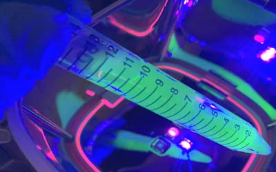

細菌病毒物
| 毒物:是指會對生物造成不適反應之物質，包含了有毒化學元素， 化合物，動植物、菌類、原生動物等生物，廢棄物等， 主要可分為環境污染與生物性危害，環境汙染為人因素居多，另外生物性危害:是指由生物物質所引起對人類與環境之危害，這些物質除了如鼠、蟑螂、蚊、蛇等動物，含各種生物鹼毒性之植物、細菌、真菌、病毒、亞病毒因子、原蟲等微生物外，亦不限其組織切片、液固氣體等。 |
| 許多臭味的來源也是由於菌類引起，食物中之霉菌等細菌危害也是造成疾病之因素，除了一些流感或傳染病外，自然界存在不少條件致病菌，在正常情況下，不會因這些細菌而發生疾病，但在人體抵抗力弱時，這些細菌才會趁虛而入；以小孩老人最易被感染。 |
| 人類至今只消滅了一種疾病病毒，就是天花病毒（Orthopoxvirus variola），在上個世紀(20世紀)，它奪走了三億人命，但此菌種還是將它保存在實驗室中，而在1918年，西班牙大流感也造成約0.5-1億間人口死亡。 |

細菌病毒危害
| 對人的危害：主要是以健康為主的危害最為嚴重，尤其有些菌種，與我們日常就已共處，在健康時是沒問題，但在抵抗力不佳的人身上就會造成傷害，另外越來越多病毒細菌在變種，這也對許多原本可治療減緩病情之藥物要成無效，以Covid19而言，它改變原本人類生活方式。以天花而言，是經過2個世紀，才將其消滅掉；而西班牙流感也是經過百年才緩和，因此新冠病毒要被消滅掉，以目前科學能力尚不足以消滅，任何的微生物細菌病毒都是有好也有壞，也需要平衡，就如同雙刃刀。 |
| 微生物對人類也是必需的，主要還是以對人類會造成生命上安全之微生物，是我們必需防治之目標，消毒是手段，預防才是根本，治療是最終方法。事先規劃預防，可降低感染帶來之大量損失。 |
| 對動植物的危害：此部份會造成人類食物短缺，以及森林消失，造成自然界的不平衡，然而有許多都是我們人類所造成的。 |

美國疾病控制與預防中心(CDC)對生物性危害物質規範分四級
| 第一級：輕微~ 對人與動物及環境之危害輕微，須配戴手套與清洗，如大腸桿菌、 水痘...等。 |
| 第二級：中等~ 對人與動物之危害中等，對環境之危害輕微，如B型肝炎、流感...等。 |
| 第三級：高等~ 對人與動物之危害高等，對環境之危害輕度，如SARS(嚴重急性呼吸道症候群)、結核菌、新冠肺炎...等，其病房以負壓為主，並且人員有完善之防護。 |
| 第四級：最高等~ 對人與動物及環境之危害最高等，如伊波拉出血熱...等，須在具有負壓的第四級標準實驗室（BSL4或P4）做處理，人員必須穿著最高等級且完整的隔離防護器具之獨立供氣式隔離衣，這類實驗室基本都是國家級實驗室，需具有專業人士操作及維護；其實驗室往往也是各國生化武器之實驗室，以伊波拉病毒而言，如需做培養或分離之檢驗，必須要到P4實驗室，目前台灣只有國防部的預醫所可以做，全球P4等級實驗室至2020年前不超過100所，但這幾年則是大量增加。 |